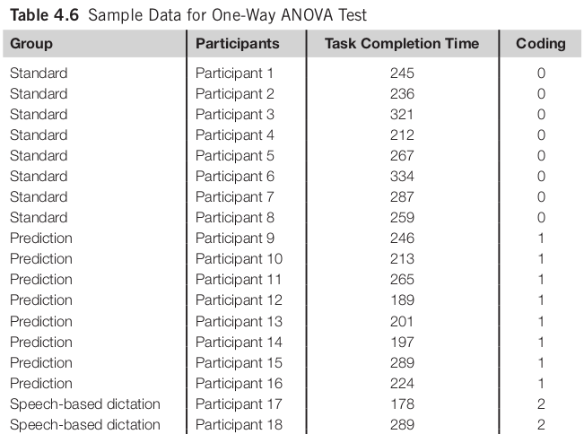
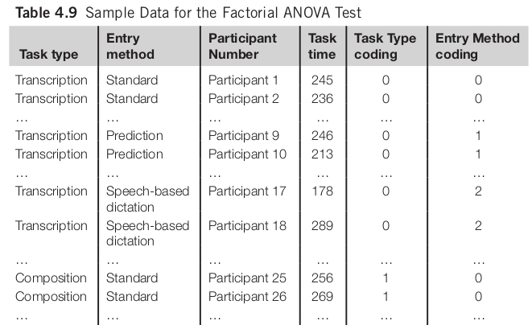
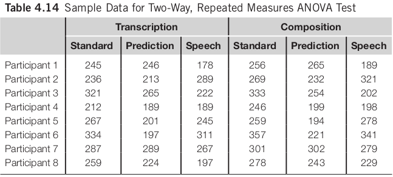
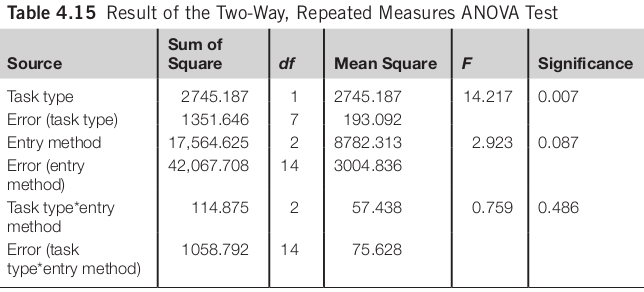
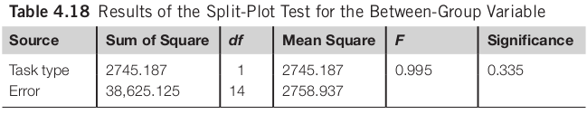
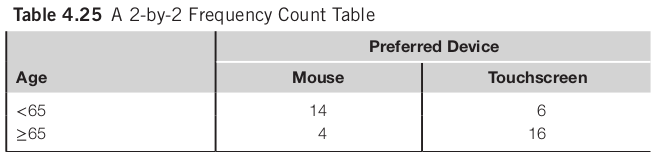

Statistical Analysis
Chapter 4
Dr. Andrew Besmer
Statistical Analysis
Prepping Data
- Clean up data
- Detect Errors/Invalid Data
- Consider reasonableness: 223 year old?
- Did you have attention checks?
- Participant spent 3 seconds per questions?
- Detect Errors/Invalid Data
Prepping Data
- Clean up data
- Detect Errors/Invalid Data
- Fix if possible, e.g. contact participant ask age
- If not possible (no link to identity, failed attention check, etc…), consider removal
- Detect Errors/Invalid Data
Prepping Data
- Clean up data
- Format
- Transform
"I am twenty one in Jan."->20 - Better if you can constrain and guide them to valid inputs
- Transform
- Format
Prepping Data
- Coding
- Stats tools typically need numerical data
No->0Yes->1Strongly Disagree->1Strongly Agree->7- Be consistent
- May be
scale,ordinalornominal- Examples
Prepping Data
- Organizing data
- Accommodate to the requirements of statistical software
- May need to combine participant data dispersed in many systems
- Logs
- Surveys
- etc…
- May need to combine participant data dispersed in many systems
- Accommodate to the requirements of statistical software
Descriptive Statistics
- Measures of central tendency
- Mean
- Median
- Mode
- Measures of spread
- Range
- Variance
- Standard deviations
Comparing Means
Comparing 2 Means
- Students T-Test
- The most widely adopted method for comparing 2 means
- Independent-samples t test: between-group design
- Paired-samples t test: within-group design
Layout of Independent Samples T Test

Layout of Paired Samples T Test

Comparing 2 Means
- Interpretation of t test results:
- Larger t value: higher probability of the null hypothesis being false
- t value needs to be reported together with the degree of freedom and the level of significance
- Two-tailed t test vs. one-tailed t test
- Whether the hypothesis indicates the direction of the difference
Comparing 2 Means
An independent-samples t test suggests that there is significant difference in the task completion time between the group who used the standard word-processing software and the group who used word-processing software with word prediction functions (t(15) = 2.169, p < 0.05).
Comparing 2 or More Means
- Analysis of variance (ANOVA)
- Also called F tests
- One-way ANOVA used for between-group design
Comparing 2 or More Means

Comparing 2 or More Means

Comparing 2 or More Means
A one-way ANOVA test using task completion time as the dependent variable and group as the independent variable suggests that there is no significant difference among the three conditions (F(2, 21) = 2.174, n.s.).
Factorial ANOVA
- For between-group design
- 2 or more independent variables involved
Factorial ANOVA

Factorial ANOVA
Factorial ANOVA
The analysis result suggests that there is no significant difference between participants who completed the transcription tasks and those who completed the composition tasks (F(1, 42) = 1.41, n.s.). There is significant difference among participants who used different text entry methods (F(2, 42) = 4.51, p < 0.05).
Repeated Measures ANOVA
- For within-group design
- Can investigate one or more variables
- One Way -> One IV w/mult levels
- Two Way -> Two or More IV w/mult levels
One Way Repeated Measures ANOVA

One Way Repeated Measures ANOVA

Two Way Repeated Measures ANOVA
Two Way Repeated Measures ANOVA

Two Way Repeated Measures ANOVA

Two Way Repeated Measures ANOVA
The task type has a significant impact on the time spent to complete the task (F(1, 7) = 14.217, p < 0.01). There is no significant difference among the three text entry methods (F(2, 14) = 2.923, n.s.). The interaction effect between the two independent variables is not significant either (F(2, 14) = 0.759, n.s.).
Split-Plot ANOVA
- Involves both between-group and within-group factors
- Between group task type, within group is entry method
- Reduces study time/participants needed
- Controls learning effect somewhat
Split-Plot ANOVA
Split-Plot ANOVA
- Between Group Variable (Task Type)

Split-Plot ANOVA
- Within Group Variable (Entry Method)

Split-Plot ANOVA
There is no significant difference between participants who complete com- position or transcription tasks (F(1, 14) = 0.995, n.s.). There is a significant difference among the three text entry methods (F(2, 28) = 5.702,p < 0.01). The interaction effect between task types and text entry methods is not significant (F(2, 28) = 0.037, n.s.).
Assumptions
- Assumptions of t tests and F tests
- Errors should be independent of each other
- E.g. two investigators, one provides more instruction
- Errors should be identically distributed
- “Homogeneity of variance”
- Errors should be normally distributed
- Skewed data (positive or negative)
- Errors should be independent of each other
Non-parametric Tests
- Non-parametric tests are used when:
- The error is not normally distributed
- The distances between any two data units are not equal
- The variance of error is not equal
CHI Squared Test
- Used to analyze categorical data
- Table of frequency counts (contingency table)
- Degree of freedom = ( Number of rows - 1 ) x ( Number of columns - 1 )
- Assumptions of the test
- Data points need to be independent
- The sample size should not be too small

CHI Squared Test
A CHI Squared Test (χ2 (1) = 10.1, p < 0.05) suggests that the probability of the difference between the rows and columns occurring by chance is less than 0.05 we therefore reject the null hypothesis and conclude that there is a relationship between age and preferred pointing device.
Non-parametric Tests to Compare Means
- Comparing two groups of data
- For between-group design: Mann–Whitney U test or the Wald–Wolfowitz runs test
- Nonparametric alternative to the independent-samples t test
- For within-group design: Wilcoxon signed ranks test
- Nonparametric alternative to the paired-samples t test
- For between-group design: Mann–Whitney U test or the Wald–Wolfowitz runs test
Non-parametric Tests to Compare Means
- Comparing three or more groups of data
- For between-group design: Kruskal–Wallis one-way analysis of variance by ranks
- Nonparametric alternative to the one-way ANOVA
- For within-group design: Friedman’s two-way analysis of variance test
- Nonparametric alternative to the Repeated Measures ANOVA
- For between-group design: Kruskal–Wallis one-way analysis of variance by ranks
Identify Relationships
- Correlation
- Two factors are correlated if there is a relationship between them
- Most commonly used test is Pearson’s product moment correlation coefficient
- Pearson’s r: ranges between -1 to 1
- Pearson’s r square represents the proportion of the variance shared by the two variables
Identify Relationships
- Correlation does not imply causal relationship
Identify Relationships
- Regression
- Can investigate the relationship between one DV and multiple IVs
- Regression is used for:
- Model construction
- Prediction
- Different regression procedures
- Simultaneous
- Hierarchical
Simultaneous Regression
- To find the relationship between DV and IVs as a group
- What percentage of variance does the set of IV’s explain in terms of the DV?
- All IVs entered simultaneously
Simultaneous Regression

Simultaneous Regression
There is a significant relationship between task completion time and the independent variables as a group (F(4, 59) = 41.147, p < 0.001). Age, computer experience, target size, and navigation distance explain a total of 73.6% of the variance in task completion time.
Hierarchical Regression
- To find the relationship between DV and each IV
- Each IV entered at a time
- Order of IVs depends on the predefined theoretical model
- Important IVs
- Covariates
Hierarchical Regression
Hierarchical Regression
Target size explains a significant percentage of the variance (31.9%) in task completion time (F(1, 62) = 29.054, p < 0.001). Navigation distance also has a significant impact on task completion time (F(1, 61) = 8.615, p < 0.01). … …
Questions
Questions
Questions?